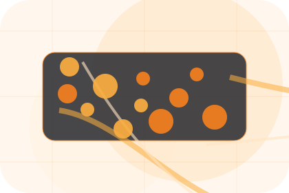
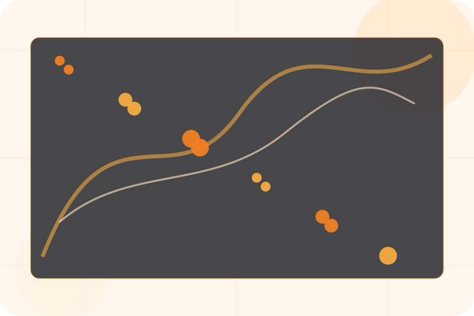
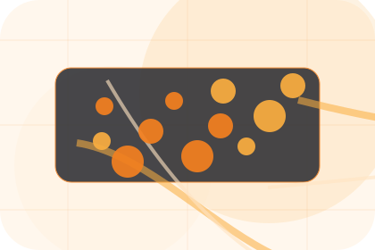
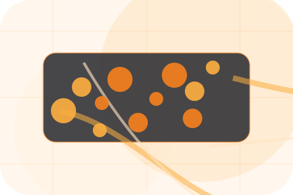
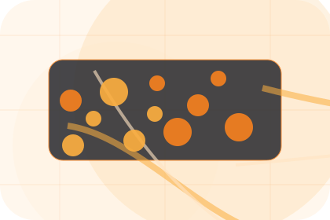
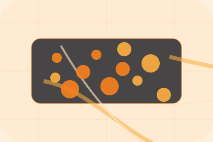

Fit
Who the offer is for, which scope it suits, and when a different route may be better.
Pricing / 01
Pricing opens as a clear technology decision hub: what Nexus offers, who it helps, why it matters, and which route to take first.
The first screen combines positioning, proof, primary action, and fast internal navigation, so people can act immediately or compare the rest of the pricing route with context.
Network diagram hero
Select the closest route and Nexus keeps the next step, proof, and follow-up expectation aligned with uptime and operational control.

Pricing / 02
Plans makes commercial comparison easier by showing fit, scope, and terms before technology visitors ask for the next step.
The layout keeps price-sensitive decisions honest: it separates starting scope, fuller delivery, and ongoing support so the visitor can ask a sharper question.
View Pricing
Who the offer is for, which scope it suits, and when a different route may be better.

What is included clearly enough for technology, it services & digital infrastructure visitors to compare value without hidden jargon.

The practical details that should be confirmed before someone asks to request an IT audit.
Who the offer is for, which scope it suits, and when a different route may be better.
ScopedWhat is included clearly enough for technology, it services & digital infrastructure visitors to compare value without hidden jargon.
QuotedThe practical details that should be confirmed before someone asks to request an IT audit.
RetainerPricing / 03
Support explains the practical scope, best-fit situations, and expected outcome so technology visitors can compare options without decoding jargon.
The section keeps the offer concrete: what is included, who it is best for, what decision it supports, and which linked route gives the deeper detail.
Open ContactWho should use support and when it belongs in the pricing journey.
Pricing / 04
SLAs makes commercial comparison easier by showing fit, scope, and terms before technology visitors ask for the next step.
The layout keeps price-sensitive decisions honest: it separates starting scope, fuller delivery, and ongoing support so the visitor can ask a sharper question.
Explore PricingWho the offer is for, which scope it suits, and when a different route may be better.
What is included clearly enough for technology, it services & digital infrastructure visitors to compare value without hidden jargon.
The practical details that should be confirmed before someone asks to request an IT audit.
Pricing / 05
Retainers makes commercial comparison easier by showing fit, scope, and terms before technology visitors ask for the next step.
The layout keeps price-sensitive decisions honest: it separates starting scope, fuller delivery, and ongoing support so the visitor can ask a sharper question.
Explore PricingWho the offer is for, which scope it suits, and when a different route may be better.
What is included clearly enough for technology, it services & digital infrastructure visitors to compare value without hidden jargon.
The practical details that should be confirmed before someone asks to request an IT audit.
Pricing / 06
Addons makes commercial comparison easier by showing fit, scope, and terms before technology visitors ask for the next step.
The layout keeps price-sensitive decisions honest: it separates starting scope, fuller delivery, and ongoing support so the visitor can ask a sharper question.
Explore PricingNexus frames addons around fit, scope, and terms so visitors can compare cost without losing the outcome.
Request IT AuditPricing / 08
Comparison makes commercial comparison easier by showing fit, scope, and terms before technology visitors ask for the next step.
The layout keeps price-sensitive decisions honest: it separates starting scope, fuller delivery, and ongoing support so the visitor can ask a sharper question.
Explore PricingWho the offer is for, which scope it suits, and when a different route may be better.
What is included clearly enough for technology, it services & digital infrastructure visitors to compare value without hidden jargon.

The practical details that should be confirmed before someone asks to request an IT audit.
Pricing / 09
Terms makes commercial comparison easier by showing fit, scope, and terms before technology visitors ask for the next step.
The layout keeps price-sensitive decisions honest: it separates starting scope, fuller delivery, and ongoing support so the visitor can ask a sharper question.
Explore PricingWho the offer is for, which scope it suits, and when a different route may be better.
What is included clearly enough for technology, it services & digital infrastructure visitors to compare value without hidden jargon.
The practical details that should be confirmed before someone asks to request an IT audit.
Pricing / 10
Nexus closes the pricing route with a clear action, a quick reminder of the value, and a low-friction way to request an IT audit.
Visitors who are ready can use the primary action. Visitors who are still comparing can scan the section links, proof, and support routes before they request an IT audit.
Request IT AuditThe final block keeps the choice simple: act now, compare one more proof route, or send enough detail for a focused response.
Request IT Audituptime and operational control
A network-first IT site with technical proof, orange action paths, product cards, and status-aware conversion. Pricing ends with a direct path to request an IT audit, plus enough context for visitors who still need to compare.

Request IT AuditInformation is provided for planning and should be reviewed for the final client, location, and operating rules.